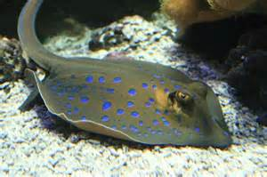

Il trigone
Il trigone o razza è un pesce cartilagineo parente degli squali e delle mante, con i quali condivide l'eleganza e le grandi pinne pettorali a vela che usa per nuotare. Questo animale si muove, simile ad un tappeto volante subacqueo vicino al fondale alla ricerca di pesci e crostacei che costituiscono buona parte della sua dieta
I trigoni possono raggiungere una larghezza di 80 cm e una lunghezza massima di 190 cm. Hanno una colorazione bruno - violacea molto scura, quasi nera. Come gli squali loro parenti, i trigoni possiedono uno scheletro cartilagineo, vivono anche nel mare Adriatico dove si nutrono di meduse, calamari, crostacei e pesci. I trigoni possiedono un aculeo velenoso alla base della coda che viene utilizzato in caso di difesa. Per questioni di sicurezza l'aculeo viene periodicamente reciso dallo staff acquariologico in modo assolutamente indolore per l'animale. Alcuni trigoni ospitati nella vasca sono nati all'Acquario di PLACEHOLDER. Grazie alla loro indole docile si possono accarezzare delicatamente sulle pinne laterali, facendo attenzione però alla bocca e alla coda.